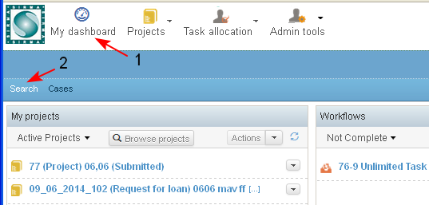
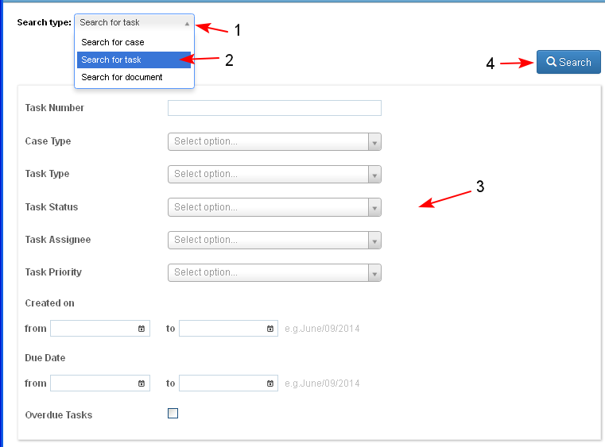
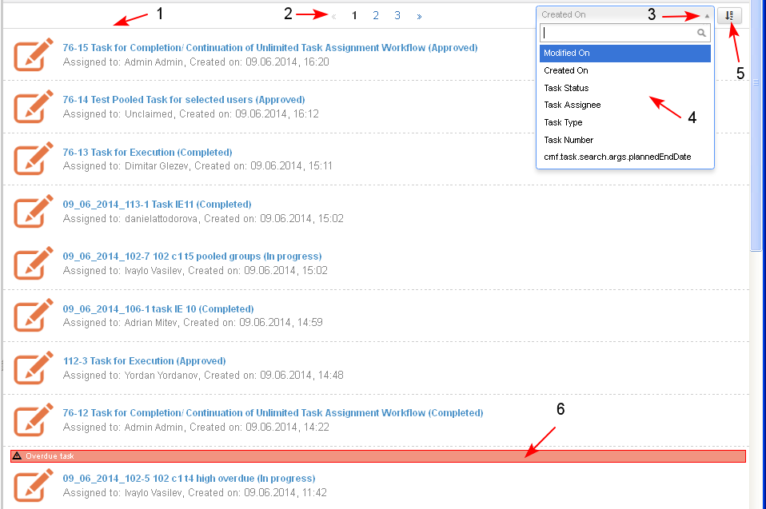

The user may search for tasks in the system to which he/ she has access using different criteria.
- The user starts the operation from:
- Personal Dashboard/ tab Search (1-2)
- Personal Dashboard/ tab Cases/ tab Search

- A screen opens and the user selects from a drop-down menu the "Search for Task" option (1-2).
- The system opens the screen for selecting one or more search criteria (3):
- Task Number
- Case Type - a drop down list of all types of cases to which the user has an access
- Task Type - a drop down list of the task types in case types
- Task Status - a drop down list of possible states of tasks
- Task Assignee - a drop down list of users who are in the same organization structure as the current user
- Task Priority - a drop down list of all possible task priorities
- Creation Date - of the task (Date from/ to)
- Due Date - for task completion (Date from/ to)
- Overdue tasks - a check box which when selected looks for all overdue tasks according the other selected search criteria
- The user enters search criteria (3) and clicks the button "Search" (4).

- The system opens the screen with the search result in a table view (1). Only the tasks in cases, to which the user has permissions are visualized, with the following data for each task:
- Type of Task - a direct link to open the task in preview
- Case for which the task has been started - a direct link to open the corresponding case dashboard
- Assignee of the task - the name of the user whom the task has been assigned
- Created on - date and time
The list of tasks is paginated (2). The user may sort the results by different criteria (3-4), ascending or descending (5). Overdue tasks are marked (6).
